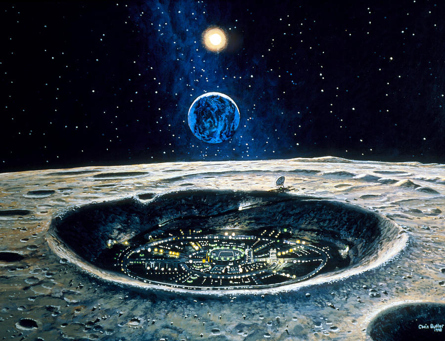
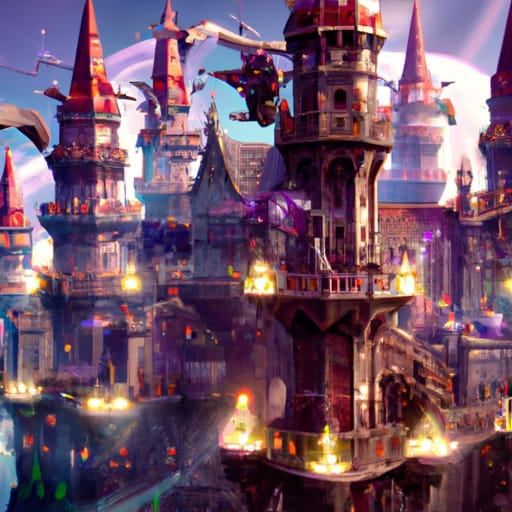

Reviere: Megalopolis City on the moon of Esseron, Ludina. Largest city outside of those
on Esseron, acting as center of influence within wildspace. Governed by the Revieran Concordat,
a parlimentarian government made up of different factions of the city.

Vikerth Acadamy of the Arcane, a magic/arcane school founded early in the colonization of the wildspace.
Vikerth acts as the largest center of arcane knowledge and learning, with many if not most prestigous mages and wizards
hailing from it. It also leads study into a newer magic known as dunamancy. It also hosts other smaller schools, such as those
for bards, sorcerers, etc.

The Holy Order is the center of religous influence, created on an important holy site related to The Banishing, a important moment
of betrayal within the gods that led to the Gods banishing themselves from the wildspace and battling each other, with the location of battle being
this site. All deities of the pantheon are represented here, with clerics and paladins being a frequent export of the Order.